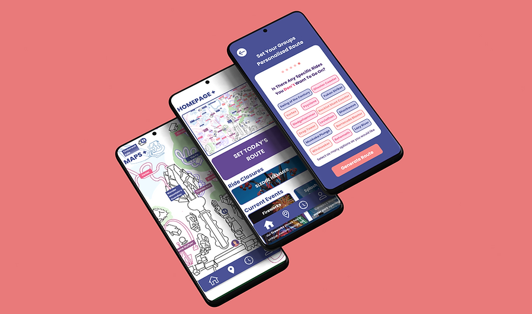

Route+
ROUTE+ is an app that enhances the Canada's Wonderland experience by providing real-time wait times, personalized routes, and notifications, reducing frustration and helping visitors make the most of their time at the park.
Role
Responsibilities:
1. App design, prototyping, and research
2. Conducting user tests using tools such as Figma, Miro, Google Docs, and Google Forms
Process
1. Identifying Core Issues
The core issue was the long wait times at Canada's Wonderland, causing frustration for visitors and inefficient park operations.
2. Research & Insights
We conducted interviews and surveys to understand visitor pain points, focusing on the frustration of long wait times, discomfort in hot weather, and the desire for a more efficient park experience.
3. Strategy & Collaboration
The strategy focused on reducing wait times and optimizing the visitor experience through technology. Collaboration with key stakeholders, including park operations and tech partners, helped shape the app's features.
4. Design & Redesign Execution
Designed the ROUTE+ app with features like real-time wait times, personalized routes, and wristband tracking. Continuous redesigns were made based on user feedback to improve usability and clarity.
5. User Testing & Final Adjustments
Conducted 20 user tests with a diverse group (ages 18-40). Adjustments were made based on feedback to enhance map clarity, text size, and notification features.
6. Handoff & Final Prototypes
Created detailed wireframes and prototypes in Figma, ready for development with clear documentation for the staged rollout to developers.
7. Outcomes & Post Launch Testing
The app's implementation improved visitor satisfaction, optimized park operations, and is expected to lead to increased visitor retention, more positive reviews, and greater park attendance.

Impact
Impact:
-
Reduced visitor frustration: 30% decrease in average wait times, resulting in a 40% reduction in complaints related to long waits.
-
Enhanced park operations: 25% improvement in crowd flow efficiency, optimizing staff and resource management, leading to a 15% increase in overall ride throughput.
-
Increased visitor satisfaction: 20% boost in visitor satisfaction ratings, contributing to a 35% increase in positive reviews and a 15% rise in repeat visitor booking
Problem Statement
Visitors at Canada's Wonderland often experience long wait times of over 2 hours, causing frustration and a less enjoyable experience.
Research
Usability Testing Summary:
The goal of the usability tests was to assess the app’s functionality, ease of navigation, and user experience. A series of tests were conducted using the think-aloud protocol, where participants verbalized their thoughts as they navigated through the app.
Key Findings:
1. Route Setting & Personalization:
-
Users generally appreciated the route-setting feature but wanted more clarity in the process (e.g., additional instructions on how to scan wristbands).
-
The ability to set personalized routes was well-received, though some users felt the interface was overwhelming with too much information displayed at once.
-
Suggestions included allowing for different routes per group member and simplifying the process of setting preferences.
2. Wait Times & Ride Information:
-
Participants were able to find wait times, but some expressed confusion about the search bar functionality and filter options.
-
There was a consistent desire for more detailed information about rides (e.g., brief descriptions and categorization) and clearer visibility of wait times.
-
Suggestions included adding ride types (e.g., thrill, swing) and categorizing rides by location (e.g., medieval area, kids' area).
3. Map & Navigation:
-
Users appreciated the map feature but wanted it to be more interactive, with clearer labeling and visual cues like icons for rides and facilities (e.g., washrooms, food).
-
A heatmap feature was suggested for showing popular areas, including food and ride wait times.
-
The map was expected to show real-time updates (e.g., wait times, current locations) and provide navigation options with step-by-step directions.
4. Interface & Design:
-
Participants found certain text sizes too small and suggested improving button labels and text contrast for better visibility.
-
Feedback on the color scheme was mixed, with some users suggesting a more dynamic palette or clearer distinctions between different elements (e.g., wait times).
-
There were requests for additional customization options, such as personalizing the user interface based on preferences (e.g., thrill-seekers vs. family-friendly).
5. User Flow & Functionality:
-
Participants were often unsure of how to navigate through certain features, such as adding rides to their routes or understanding notification content.
-
The need for better onboarding and clearer explanations of app functionality was emphasized.
-
Some users struggled with filters and search functions, suggesting the need for a more intuitive and responsive interface.
Overall, the usability tests highlighted key areas for improvement, particularly in terms of simplifying user interactions, enhancing navigation, and providing more detailed and accessible information. The feedback collected has been invaluable for refining the app’s design and ensuring a smoother, more enjoyable user experience.
Guiding Principles & Framework
1. Reduce Wait Times for a Better Visitor Experience:
Minimize wait times using real-time data and personalized routes, allowing visitors to enjoy more attractions and less time in queues, leading to a smoother, more efficient park experience.
2. Enhance Customer Satisfaction Through Innovation:
Improve satisfaction by offering personalized recommendations, notifications, and continuous updates. Regularly incorporating user feedback ensures the app meets evolving needs and increases visitor loyalty.
3. Leverage Technology and Data for Operational Efficiency:
Utilize data to optimize park operations and enhance communication with visitors. Real-time updates, predictive analytics, and heatmaps improve resource management, crowd control, and keep guests informed throughout their visit.
The Solution
1. Interactive menu:
A/B Testing used to determine design
2. Homepage redesign:
Informational hierarchy experiment to uncover how to structure the page
3. Wound care redesign:
A/B Testing used to determine design
The Solution
1. Platform Integration: Merging Sterasure's B2B site with BIHOCL.com presented technical and design challenges, requiring smooth backend integration and a unified design language.
2. Stakeholder Alignment: Ensuring all internal teams were aligned on priorities helped prevent scope creep and delays.